Online manual/Embedding eXe resources
eXe allows you to include several different types of file or web-based resources in your content. These include images, media (video and audio clips), mathematical graphics (using LaTeX), and attachments of any file type, and are available to any iDevice's TinyMCE-based rich-text fields. In most all cases, you have the choice of either embedding the actual file into your e-learning package, or providing an external link to web-hosted resources.
This eXe manual page will start off by describing how you can include images within your eXe content. All other media types essentially build upon the same patterns used with images, and your knowledge will evolve from there.
Including Images
The TinyMCE image button allows you to include images just about anywhere within your content, in any rich-text field.
The process of including images is very simply to edit any iDevice's rich-text field, and click on TinyMCE's image button to open the image dialog box. This is illustrated below using the Activity iDevice as an example:
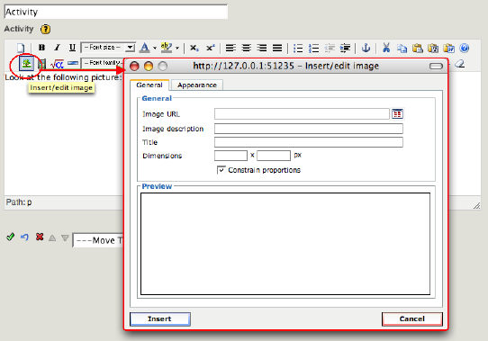
Within the image dialog box, you may choose to either:
- specify the URL to an externally hosted Web-based image
- or, click on the image file-browser button to choose and embed a local image file
Then...
- click "Insert" in TinyMCE's image dialog,
- click eXe's green "Done" check mark,
- and there you have it, an image!
Simple step-by-step examples including both of these image types will be shown below for you to follow along, beginning with externally hosted Web-based images.
Including Web-based Images
Images which are hosted anywhere on the web may be included in your content. Such images will be linked into your content and will appear the same as local File-based images, but the image data itself will not be saved with your content. This means that your eXe project and its exported content will be smaller and more "lightweight", but will therefore require network access to the various web locations in order to view the images. Only include Web-based images into your content when you are not concerned about network access issues, or when your content is itself to be published onto the web.
To include a Web-based image within your content, simply specify the URL for the Web-based image into the image dialog's Image URL field and hit [RETURN] to load it into the image dialog box's Preview pane. The following example shows one of eXe's Flickr-hosted images:
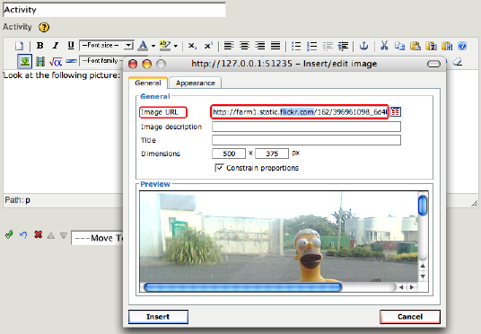
You will usually find that the image is larger than fits within the Preview pane, but you may use the Preview pane's horizontal and vertical scrollbars to effectively pan around and see more of the image.
Now is a good time to notice the current size of the image ("Dimensions" shows 500 x 375 pixels in the above example), and to change it as necessary for your content. Note that the original image will be retained, so you can always come come back and change its size again later without any problem. Please see Modifying the Image Size below, in the Modifying Image Attributes section of this page for further discussion of the size attribute.
The following shows how this example image might be modified to instead show as 300 pixels wide, and a corresponding height, by keeping the "Constrain Proportions" option checked:
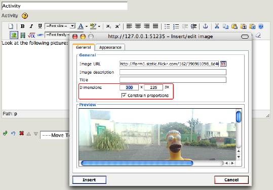
Notice that the image dialog has had its "General" tab active so far. More image attributes may be adjusted in the image dialog's "Appearance" tab, as discussed in the Modifying Image Attributes section of this page. For now, though, go ahead and click on the image dialog's "Insert" button:
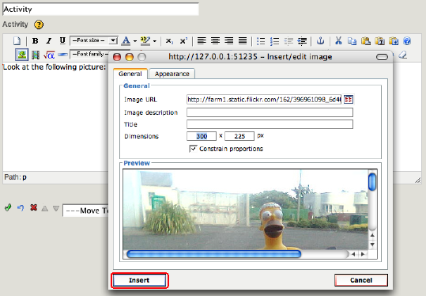
Once you have clicked the "Insert" button, the TinyMCE image dialog box closes and the image itself is shown within the current iDevice's active TinyMCE rich-text field where you are returned to editing, appearing something like this:
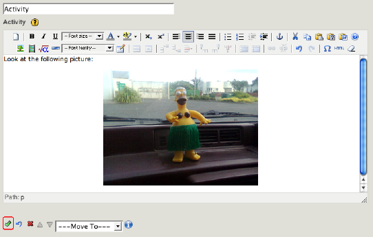
At this point, the image is shown within the content of the iDevice that you are currently editing. You may continue editing that iDevice, possibly even adding more images if you wish. Once you are finished editing that iDevice, click on the iDevice's green "Done" check mark to "record" the content into the iDevice and switch eXe's authoring pane from edit mode back to preview mode. The inserted image should appear something like this:
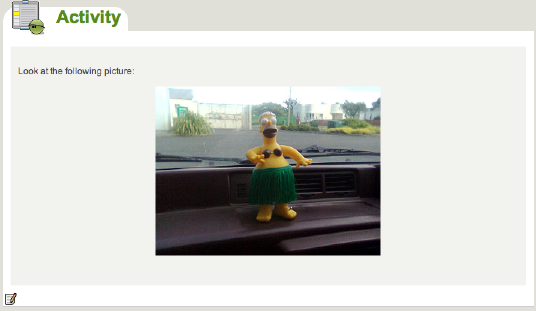
Your Web-based image has now been successfully included within your project's content!
Including local File-based Images
Local image files (of type .jpg, .jpeg, .png, or .gif) may also be included in your content. To a typical user, the difference in viewing a File-based image as compared to a Web-based image would be rather unnoticeable, assuming that network connectivity exists to the Web-based image's external web host. And it is the issues around network connectivity that really bring File-based images into play.
Unlike Web-based images, which are dynamically loaded from their external web hosts each time they are viewed, any File-based images will be embedded into, and included with, your project. While this does make for a larger eXe project file and exported content, it also ensures portability. This is especially important if your content is to be viewed (or even re-authored) in a network-restricted or offline setting. If you intend on publishing your exported content onto CD or other transportable medium for offline viewing, then you really should embed all of your images (and any other media) from local files.
The process of including a File-based image is very similar to the above steps for including a Web-based image, with the primary differences being:
- use the TinyMCE image dialog's file-browser button to choose and preview your image
- the iDevice's green check mark not only finishes editing the iDevice, but also does the actual image-file embedding
To include a local File-based image within your content, start by clicking on the image dialog's file-browser button, to the right of the Image URL field:
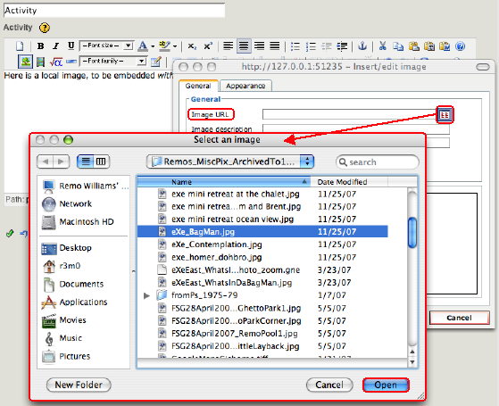
A file browser for your operating system will then appear, with which you may navigate to, and select, the local image file of interest.
Once you select your local image file, the image will be loaded into the image dialog's Preview pane, and a temporary "preview path" will be shown in the image dialog's Image URL:

The "preview path" is only a temporary location for the image file, as TinyMCE provides to eXe a copy of the file that is to be embedded. Later, once you have finished editing the iDevice and click on the green "Done" check mark, eXe further processes the image file into an embedded eXe resource.
WARNING: Do not modify this preview path. Any changes to this path can render its image unembedded and unviewable in the content.
Just as with Web-based images, you will usually find that the image is larger than fits within the Preview pane, but you may use the Preview pane's horizontal and vertical scrollbars to effectively pan around and see more of the image. Likewise, now is a good time to notice the current size of the image ("Dimensions" shows 500 x 375 pixels in the above example), and to change it as necessary for your content. Note that the original image will be retained, so you can always come come back and change its size again later without any problem. Please see Modifying the Image Size below, in the Modifying Image Attributes section of this page for further discussion of the size attribute.
The following shows how this example image might be modified to instead show as 400 pixels wide, and a corresponding height, by keeping the "Constrain Proportions" option checked:

Notice that the image dialog has had its "General" tab active so far. Just as with Web-based images, more image attributes may be adjusted in the image dialog's "Appearance" tab, as discussed in the Modifying Image Attributes section of this page. For now, though, go ahead and click on the image dialog's "Insert" button:
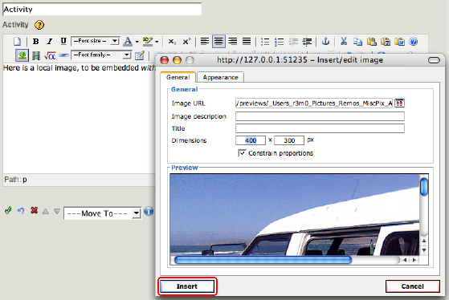
Once you have clicked the "Insert" button, the TinyMCE image dialog box closes and the image itself is shown within the current iDevice's active TinyMCE rich-text field where you are returned to editing, appearing something like this:
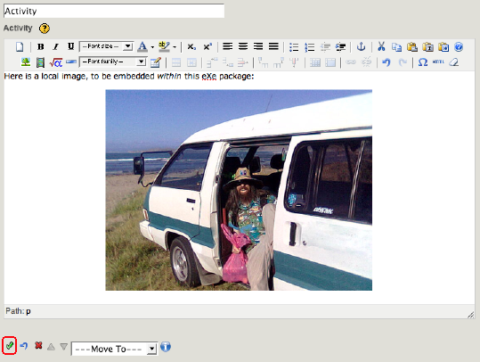
At this point, the image is shown within the content of the iDevice that you are currently editing. You may continue editing that iDevice, possibly even adding more images if you wish. Once you are finished editing that iDevice, click on the iDevice's green "Done" check mark to "record" the content into the iDevice and switch eXe's authoring pane from edit mode back to preview mode.
Furthermore, as relates to local File-based images (or other such resources), eXe's green "Done" check mark will also perform the actual embedding process, thereby including it as an internal eXe "resource" within your project.
The inserted image should appear something like this:
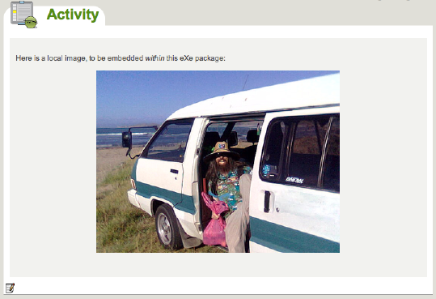
Your local File-based image has now been successfully embedded into your project and included within its content!
Modifying Image Attributes
Each of the following image attributes may either be set in the image's intial properties dialog box, or in a subsequent edit of the image's properties via its TinyMCE context menu or via the TinyMCE image button after selecting the image.
Let's take a look at an example image that has already been included in the content (either internally embedded and externally linked). Begin by clicking on its iDevice's edit button from the Authoring pane's preview mode:
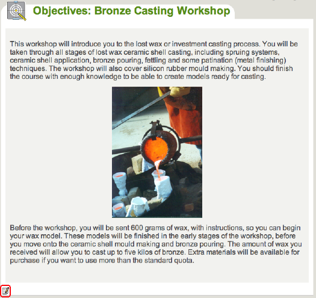
...which opens the rich-text editor for that iDevice. To then open the image's properties dialog box, select the image and either:
- click on the TinyMCE toolbar's image button
- or, select "Image properties" from the image's context menu (e.g., via a right-mouse button in Windows, or a control-click on Macintosh)
Both of these methods for opening the image properties dialog box are shown highlighted below:
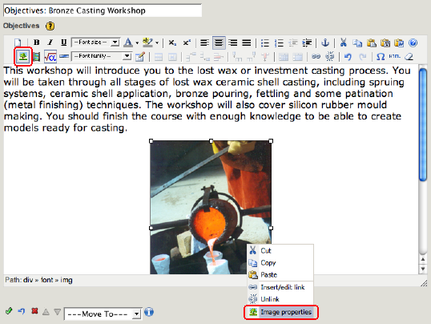
Either of the above should open up that embedded image's dialog box, with its General tab selected:
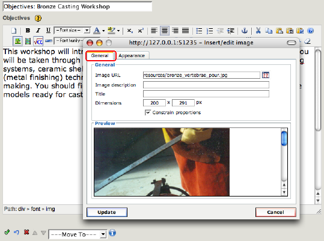
In the remainder of this section, the image dialog box will be shown by itself, with its corresponding rich-text editor merely being implied rather than explicitly shown. For example, the General tab of the above image will appear as:
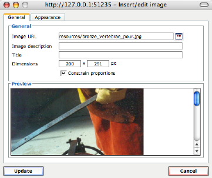
Take a look at the Appearance tab as well:
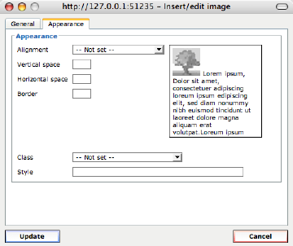
Next up, attributes within these two image dialog tabs will be discussed further.
Modifying the Image URL
Warnings are scattered about this document spouting cautions about embedded eXe resources' Image URLs: "Any changes to the Image URL path can render its image unviewable." And this is indeed very true. So unless you intend on changing the image within your content, it is best to stay away from any image's Image URL attribute.
But when you do want to change the current image in your content, you can do so by changing its Image URL:
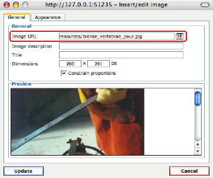
It does not matter if your current image is externally hosted or is internally embedded, from here the process of replacing an old image is the same as initially including a new image...
Within the image dialog box, you may choose to either
- specify the URL to an externally hosted Web-based image
- or, click on the image file-browser button to choose and embed a local image file
After clicking "Update" in TinyMCE's image dialog box, remember that you will again need to press the green "Done" check mark to process and embed any new local File-based image, whereas new Web-based images are not, of course, embedded. The previous image resource will be removed from the iDevice's field.
Modifying the Image Size
An image's current display size is shown in its "Dimensions" field as width x height, in pixels:
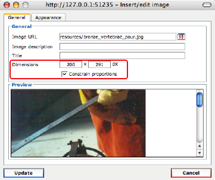
You may click on the "Constrain Proportions" checkbox and adjust either the width or the height, with the other dimension adjusting accordingly to maintain the same screen proportions. Or, leave "Constrain Proportions" unchecked and adjust the width and/or the height independently, stretching the image horizontally or vertically.
The actual eXe resource for an internally embedded image file is stored as the original image's full size, whatever that might have been when included. Although this will not scale up very gracefully to display sizes larger than the original size, changing the display size to anything smaller than its original size can be done any number of times. That is, there will be no loss by displaying the image at 25% its original size and subsequently increasing this to display at 50% its original size.
Be aware that internally embedded images are currently also exported at that same full size, regardless of how small the image's display size might be set within the content. A large image with a small display size will be slow to render, both in eXe's previewing mode and in your exported content.
Modifying the Image Description and Title
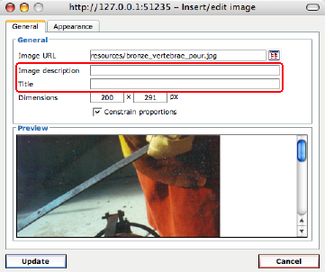
- Image Description: Sets the ALT value of this image's corresponding HTML IMG tag for accessibility purposes whenever the image is displayed, as well as to display when the image itself is unable to be displayed.
- Image Title: Sets a tooltip that shows when the mouse cursor hovers over the image.
Although not mentioned when initially including the above examples' images for simplicity, it is actually considered good practice to set these two fields right away when you do insert the image. At the very least, you should set the Image Description for accessibility.
Modifying the Image Class and Style
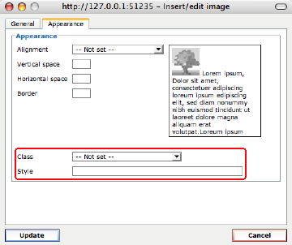
These are beyond the scope of this document (that is, we've never used them ourselves), but the adventurous might somehow be able to use Classes or Style names in conjunction with CSS (Cascading Style Sheets) to provide different image display formatting for different types of images. For example, you might be able to set your CSS such that all images with style=fancy are formatted in one manner, and all images with style=simple are formatted less extravagantly. But that's just a guess... refer to TinyMCE for more information on its image plugin.
Modifying the Image Border
The TinyMCE image dialog's Appearance tab has a nice little built-in formatting illustration on its right side, where it attempts to represent how the image's attribute values might affect its overall appearance within your content. See how specifying a border of 5 pixels thick is represented:
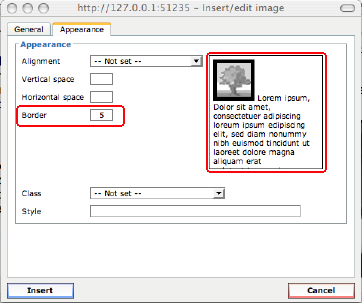
Be aware that ultimately, the particular display style of your overall content will dictate how any image borders appear. Short of any override in the border appearances, the image dialog's Border field is an easy way to frame the image, generally as a solid dark border. But your style's Cascading Style Sheets (CSS) will have the final say on their appearance.
Modifying the Image Alignment
You may also use the image properties dialog's Appearance tab to specify the image alignment. However, depending upon your active Cascading Style Sheets (CSS), the image alignment have some unexpected results, such as this one:
The above image comes out of its iDevice's bounding box, but doesn't look too bad.
Other times the unexpected results are much worse, such as:
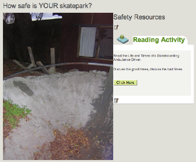
Notice how the subsequent Reading Activity iDevice ends up somehow in the middle of the Safety Resources free-text iDevice.
For better image alignment control, try first including a TinyMCE table within your rich-text, and insert your image and text within the table cells.
Removing an Image
To remove an image from an iDevice's rich-text field, simply:
1. edit that iDevice,
2. click on the image to select it,
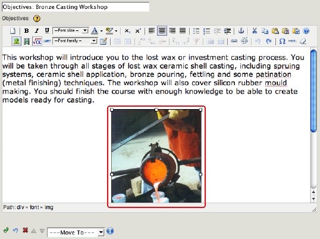
3. and press the [Delete] key.
4. Finally, press the iDevice's green "Done" check mark finish editing and process the iDevice's content. This will remove the image and effectively "unembed" any corresponding eXe resource, if applicable.
Multiple Images within the same rich-text field
The examples shown so far are dealing with just one image at a time in a rich-text field. You may actually include many images (as well as multi-media and other resources) within any rich-text field. Here are a couple quick tips in doing so:
- When inserting new images, ensure that the text cursor is where you want the image to be placed. After clicking on the TinyMCE image button, the image dialog should come up empty, without an image previewed, and ready for you to specify or choose another image to Insert:
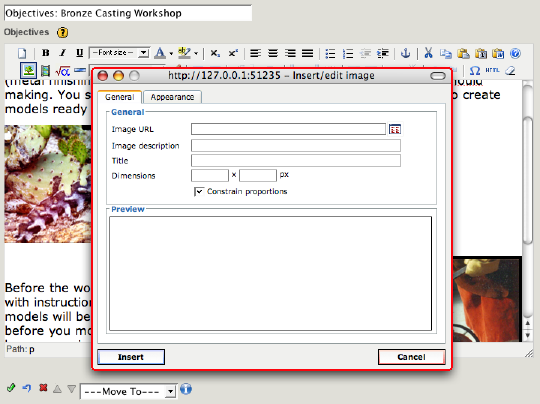
- When modifying images that are already included in the content, first click on the image within the rich-text field. After then clicking on the TinyMCE image button, the image dialog should come up with the image's attributes showing, and the ability to Update the image with any changes you make:
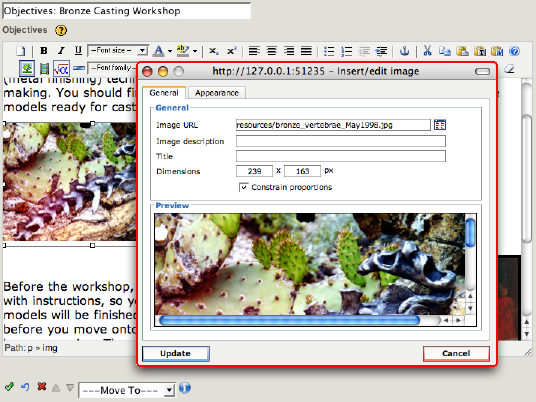
Also, if you are only wanting to display several images and their captions, don't forget to take a look at the Image Gallery iDevice, as it might be just what you need:
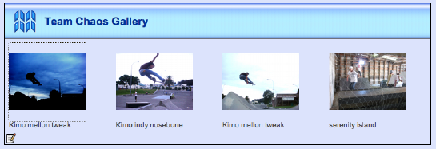
Clicking on the gallery of images brings up the Gallery iDevice popup image navigator:
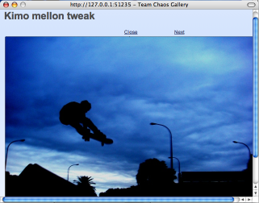
Including Multi-Media, Audio and Video
The TinyMCE media button allows you to include multi-media objects just about anywhere within your content, in any rich-text field. As with images, the media button allows up to include externally-hosted Web-based multi-media as well as local File-based multi-media.
Once you click on the TinyMCE media button, its media dialog box should open up and should even look very much like the image dialog:
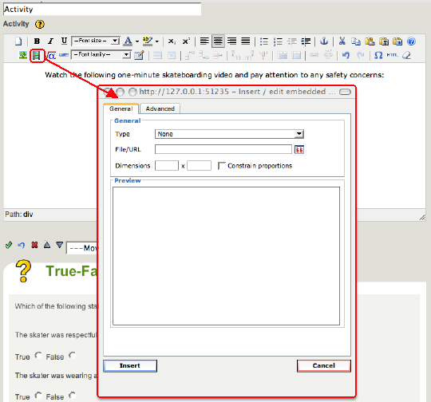
Before going through any examples of including any media, the available media types shall be discussed.
Supported Multi-Media types
Supported media types are shown in the media dialog's "Type" drop-down list:
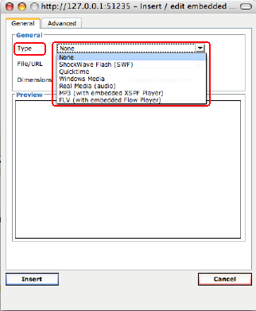
The following media types are supported: ShockWave Flash SWF, QuickTime, Windows Media, Real Media (audio), MP3, FLV, and YouTube and Google Videos. All of these media types (except for MP3 and FLV) may require appropriate additional browser plugin support. With only minimal Flash installed, however, MP3s and FLVs may be embedded with a built-in player. Each of these different media types has their own set of attributes, available within the media dialog's Advanced tab.
Great care should be taken when considering which media types to incorporate. Of course a major factor does happen to be the type of any multi-media files that you already have available. But also of great importance is how you intend on your content ultimately being viewed, including the type of operating system or browser support you might be looking at.
While Flash objects, for example, might be considered by some as being the most portable across different computer platforms, if your content is targeted for a Macintosh-specific institute or group, Quicktime would be reasonable; if your content is targeted for a Windows-specific institute or group, then Windows Media types would likewise be reasonable. Ultimately, each of the media types might somehow be playable on most destination systems, but some might require a little more work ensuring that the proper plugins are installed, etc.
Two of the supported media types (MP3 and FLV) attempt to get around these system issues by embedding and supplying their own players (XSPF's MP3 audio player, and Flow Player's FLV flash video player, respectively) so that they are more easily cross-platform capable. Even these two embedded players, however, do have a minimal dependency upon the now relatively commonplace Flash being available on the destination system.
Be aware that the appropriate plugins will need to be available to eXe's custom FireFox browser (for authoring) as WELL as to any other browser which will be viewing the content. To check plugin status on your system, see: http://developer.apple.com/internet/webcontent/examples/detectallplugins.shtml
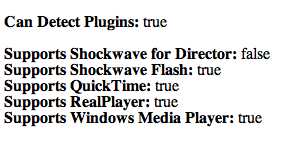
Each media type is discussed in more detail below, along with their specific Advanced tab of the media dialog box.
ShockWave Flash (SWF) Videos
- Allowed ShockWave file types: *.swf
- System Requirements: requires Flash browser plugin
The ShockWave Flash media type's Advanced media dialog tab appears as:
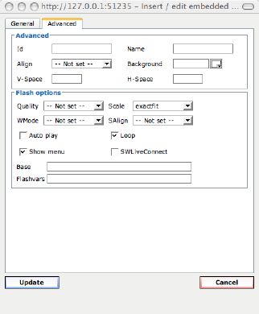
Note that YouTube and Google Videos are also supported by ShockWave Flash, although technically they must be added with a media type of "None". See their section, below, for further information.
ShockWave .swf files are notoriously particular about their "Auto play" settings. Each .swf is typically created with an "Auto play" setting, either enabled (for the media to automatically begin playing once shown in the content); or, disabled (requiring that the viewing user to initiate play).
- If the .swf that you are inserting was built with "Auto play" enabled, then this attribute must also be enabled within its media dialog's Advanced tab.
- Conversely, if the .swf was built with "Auto play" disabled, then be sure to leave this attribute disabled within its media dialog's Advanced tab.
A mismatch between the .swf's built-in "Auto play" and its corresponding eXe media attributes may prevent the .swf from being played at all. So, if you run into problems getting your .swf to play, first thing to try would be toggle its media attribute for "Auto play" and try again.
Quicktime Videos
- Allowed Quicktime file types: *.mov, *.qt, *.mpg, *.mp3, *.mp4, or *.mpeg
- System Requirements: requires Quicktime on system or as a browser plugin
The Quicktime media type's Advanced media dialog tab appears as:
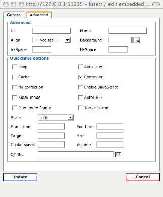
Windows Media Videos
- Allowed Windows Media file types: *.avi, *.wmv, *.wm, *.asf, *.asx, *.wmx, or *.wvx
- System Requirements: requires Windows Media Player on system or as a WMP browser plugin
The Windows Media media type's Advanced media dialog tab appears as:
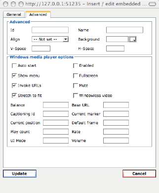
Real Media Audio
- Allowed Real Media file types: *.rm, *.ra, *.ram, or *.mp3
- System Requirements: requires Real Media on system or as a browser plugin
The Real Media media type's Advanced media dialog tab appears as:
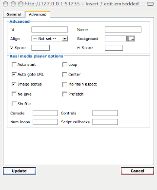
MP3 Audio (with embedded XSPF Player)
- Allowed MP3 file types: *.mp3
- System Requirements: minimal Flash on system
The MP3 media type's Advanced media dialog tab appears as:
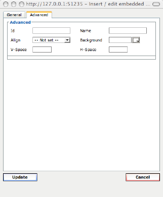
FLV Video (with embedded Flow Player)
- Allowed FLV file types: *.flv
- System Requirements: minimal Flash on system
The FLV media type's Advanced media dialog tab appears as:

FLV is a Flash Video and should not be confused with the related, but distinctly different, ShockWave Flash SWF media type.
FLV's Flow Player isn't actually made available until it is embedded with the content upon export. This means that although the appears as if it should work within eXe's preview mode, it will not actually play properly until exported. While in preview mode, it will merely appear as follows:
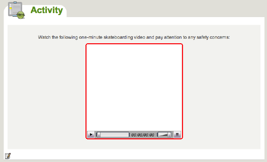
Bonus! YouTube or Google Videos
You can now embed streaming Web-based YouTube and Google Videos with the same easy to use TinyMCE media plugin. Simply copy the appropriate URL for the video clip and paste it into the media dialog box's File/URL field and press [RETURN]. If the base URL is recognized as one of these, the media type ShockWave Flash SWF will be selected automatically.
- YouTube Videos must begin with a URL of: http://www.youtube.com/watch?v
and will preview within the media dialog box as:
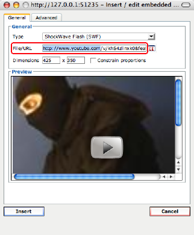
- Google Videos must begin with a URL of: http://video.google.com/videoplay?docid=
and will preview within the media dialog box as:
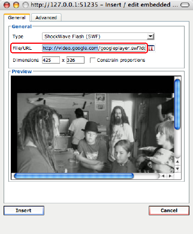
Additional Media Types?
While the above media types are the only types officially supported through the TinyMCE media dialog, you may use some advanced HTML embedding techniques to include the relevant EMBED code for just about any other media type. For example, not long ago it was necessary to do exactly this kind of procedure to embed a YouTube video. Feel free to compare the old YouTube embed method, described at: Tips & Tricks: Inserting YouTube video into eXe
But ultimately, all advanced embedding techniques should become available at the bottom of this page, in: Even More Advanced resource-embedding topics
Including Web-based Media
The only significant difference between including Web-based Images and including Web-based Media is the actual type of media and any media-specific attributes (as well as using the TinyMCE media button rather than the TinyMCE image button). As such, and rather than repeating the otherwise identical steps, you are referred to: Including Web-based Images
Including local File-based Media
Likewise, the only significant difference between including local File-based Images and including local File-based Media is the actual type of media and any media-specific attributes (as well as using the TinyMCE media button rather than the TinyMCE image button). As such, and rather than repeating the otherwise identical steps, you are referred to: Including local File-based Images
Modifying Media Attributes
Just as with modifying an image and its attributes, once you are editing in its rich-text field, you can open the TinyMCE media dialog box by selecting the media object and either:
- click on the TinyMCE toolbar's media button
- or, select "Insert / Edit embedded media" from the media object's context menu (e.g., via a right-mouse button in Windows, or a control-click on Macintosh)
Both of these methods for opening the media properties dialog box are shown highlighted below:
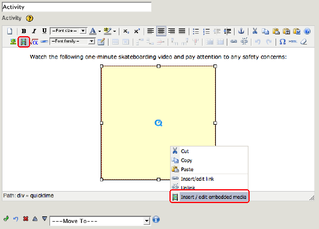
And from there, just as with images, have fun modifying the properties. Be sure to click Update when you are done with the media dialog box, and click its iDevice's green "Done" check mark to process the new content.
Removing an Embedded Media
Just as with removing an image, you may remove a media object from an iDevice's rich-text field simply as:
1. edit that iDevice,
2. click on the media object to select it,
3. and press the [Delete] key.
4. Finally, press the iDevice's green "Done" check mark finish editing and process the iDevice's content. This will remove the media and effectively "unembed" any corresponding eXe resource.
Including Mathematical Graphics (using LaTeX)
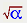 The TinyMCE's eXe math image button, allows you to create and include mathematical graphics images just about anywhere within your content, in any rich-text field. As a specific type of embedded image resource, the eXe math image is a graphical representation of any mathematical equation (or otherwise) that can be specified to LaTeX.
What is LaTeX and MimeTeX?
LaTeX is a general typesetting and formatting "markup" language which allows you to specify mathematical equations (and much more) from the very simple to the extremely complex.
For example, specifying LaTeX markup source of "x=\frac{-b\pm\sqrt{b^2-4ac}}{2a}" will result in the following math image of the quadratic formula: 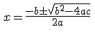
Don't worry if the above LaTeX markup source initially appears rather intimidating; you can easily start creating eXe math images that are as simple as the following:
- LaTeX markup source of "1+1=2" will result in the math image: 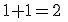
- LaTeX markup source of "3^2=9" will result in the math image: 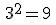
- LaTeX markup source of "ax+by=c" will result in the math image: 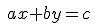
MimeTeX is a particular LaTeX-processing tool used within eXe to parse the source LaTeX and generate the resulting math image. MimeTex does not necessarily implement all of LaTeX's capabilities, but is focused primarily on the mathematical portions thereof. A quick introductory tutorial to MimeTeX and LaTeX may be found at http://www.forkosh.com/mimetextutorial.html.
Generating an eXe Math Image
From within the rich-text editing field, click on TinyMCE's "eXe math image" button to bring up the eXe LaTeX Math Image dialog box:
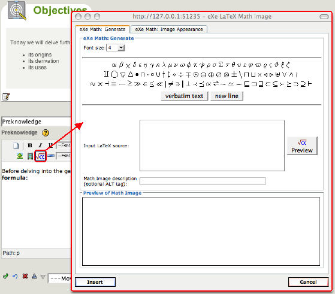
You may type your LaTeX markup source directly, or you may choose to select some of the available symbols to have their corresponding LaTeX markup inserted into your source.
- The "verbatim text" button will insert a pair of LaTeX commands "\begin{verbatim}\end{verbatim}"; any text that you enter between the "\begin{verbatim}" and the "\end{verbatim}" will be shown "as is" without any LaTeX processing.
- The "new line" will insert LaTeX's newline command "\\" to generate a line-break.
- The font size may be selected from its drop-down list for your current image of equations. While each image of equations may have only one font size, you may embed any number of math images into each rich-text field.
Click the math dialog's Preview button to process the LaTeX source, generate a math image, and display it in the math dialog's Preview pane.
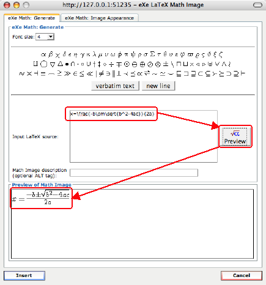
Click on the math dialog's Insert button when done. The image will be generated one more time if anything was changed since you pressed Preview. Then, the generated math image should appear in your rich-text field as:
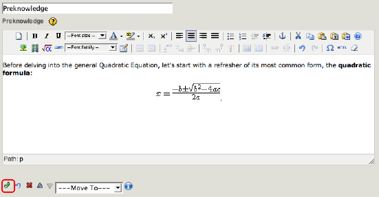
However, occasionally the math image appears as a broken image, such as:
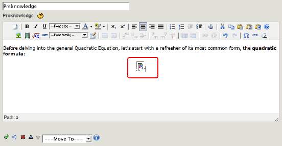
.... which indicates that there might have been a problem inserting the MimeTex image. Usually this can be resolved while still in the rich-text editor by first deleting that broken image (merely select it and press [Delete]), then trying again by opening the eXe math image button and following the same steps.
Once the image does show properly in your rich-text field, you may then fully embed it into your project by pressing the iDevice's green "Done" check mark:
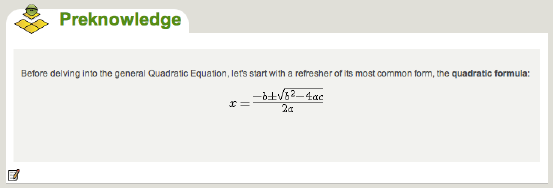
Modifying an eXe Math Image
While the initial creation of the mathematical image may be slightly more involved than a standard image due to the LaTeX source markup, once the math image has been generated, it is really just a very specific version of a standard File-based image embedded as an eXe resource. The actual embedded file name and path just happens to be hidden since its file is generated behind the scenes by way of the Preview and Insert buttons.
So, much of the same information that you learned earlier regarding the inclusion of File-based Images and the modification of their attributes may also be applied here working with math images. This includes the various ways to position and align any image within eXe.
Just as with modifying a standard image, once you are editing in its rich-text field, you can open the eXe math image dialog box by selecting the math image and either:
- click on the TinyMCE toolbar's eXe math image button
- or, select "LaTeX Math Image properties" from the image's context menu (e.g., via a right-mouse button in Windows, or a control-click on Macintosh)
Both of these methods for opening the math image properties dialog box are shown highlighted below:
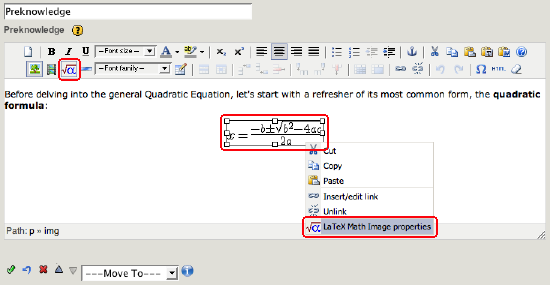
Either of the above should open up that embedded math image's dialog box, with its Generate tab selected:
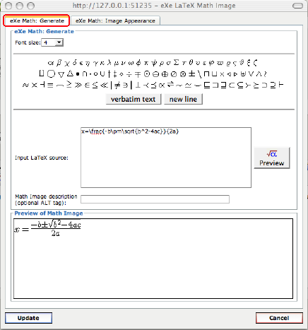
Notice that the LaTeX source markup has retained such that you can easily make incremental variations to your eXe math image. In fact, this coupling with its LaTeX source code is the main thing that makes it more than "just an image". You may change attributes on this Generate tab as well as select the math image's Appearance tab for more attributes:
Click on the math image dialog's Update button once you are done with any modifications, and the math image will be updated in the rich-text editor:
Remember to click on the iDevice's green "Done" check mark to fully embed the changes.
Removing an eXe Math Image
Just as with removing a standard image, you may remove a math image from an iDevice's rich-text field simply as:
1. edit that iDevice,
2. click on the math image to select it,
3. and press the [Delete] key.
4. Finally, press the iDevice's green "Done" check mark finish editing and process the iDevice's content. This will remove the math image and effectively "unembed" any corresponding eXe resource.
Further information regarding LaTeX and the eXe Math Images
MimeTex Tutorial and Examples
MimeTex's LaTeX Tutorial may be found at http://www.forkosh.com/mimetextutorial.html and includes an excellent interactive LaTeX practice box, examples, and links to additional LaTeX references.
Spanish slideshow on eXe's math images
A great flash-based slideshow illustrating the creation of eXe math images is included in the Spanish eXe Tutorial, at http://www.aprenderenred.net/exelearning_tutorial/editor6.html. Click on its large arrows to advance through the slides.
Including Links and Attachments
The TinyMCE "link" and "unlink" buttons can be used to create links just about anywhere in your content, in any rich-text field; or, to remove such links. These links come in two main varieties: "navigational" links, and "attached document" links.
"Navigational" links are those that, when clicked from within your content, direct the web browser to a new destination page (optionally even in a new browser window). The resulting destination may be an external website, or possibly even an internal page of your content. In general, "navigational" links are simply referred to as "links", and may be created for the following:
- linking to external websites,
- or, linking to internal anchors (only for Web Site exports).
Please note that these navigational links differ from any navigation bar your exported content might already have, in that they are very specific one-off links which you may place just about anywhere, to link to just about anywhere. The navigation bar, typically on the left side of the content, is specific to the pages within your content and is either included by eXe when exporting to a Web Site, or is supplied by your specific Learning Management System (LMS) once your exported and packaged content is subsequently imported into an LMS. In fact, LMS's often prefer to take care of all your contents navigational needs, including any page tracking statistics, if applicable. For this reason, eXe's internal navigational links are only enabled for export to Web Site content and will be disabled on other exports.
"Attached document" links are those that, when clicked from within your content, open up the linked document for viewing in its associated helper application, if available. For example, an attached .PDF document might open up in Adobe's Acrobat Reader, or other such helper application. In general, these are also simply referred to as "attachments", and may be created for the following:
- to attach externally Web-hosted file resources of any type,
- or, to attach, and internally embed, local File-based resources of any type.
Take a look at some sample content that has already included each of the above link and attachment types:
The above sample Preknowledge iDevice has the following link and attachment types, in order:
- a navigation link to an external website (the "Unofficial Skatepark Website"),
- an external Web-based attachment (PDF press release "Skatepark Grand Opening"),
- an internally embedded File-based attachment (PDF "Skatepark Rules and Regulations"),
- and an internal navigation link to another node within this content, "Additional Safety Resources".
The bottom-most link, the sample internal navigation link, also happens to shows how a link might appear within your content when the mouse hovers over it:
- the link text (or image, for that matter) is underlined (or bordered),
- and the link's title appears as a tooltip, in this case showing "internal link to the Additional Safety Resources page.
Note that the actual appearance of your links is controlled by your content's active Cascading Style Sheets (CSS).
Now that you have seen how the links appear after they have been included, let's back up to see how they are included into the content. Before any links have been added, with only text placeholders for the links, the sample content appeared as:
Click on the iDevice's edit button to enter its edit mode:
... and notice that the TinyMCE link button is not yet enabled. In order to specify a link, you must first highlight and select some text and (and/or images) to become the link source.
Simple step-by-step examples for each of this sample's links will be shown below for you to follow along, beginning with a navigation link to an external website.
Including Web-based Navigation Links
Enter the destination web address into the link dialog's Link URL field. If you would like to have the destination pop up in a new target window, set that within the links dialog's General tab as well:
Notice the Link URL and the Target, as well as a Title that can show as a tooltip when a mouse cursor hovers over the link.
Then simply click the link dialog box's Insert button, and the iDevice's green "Done" check mark to process the new web link.
Including Web-based Document Attachments
Provide the web address for the Web-based attachment into the link dialog's Link URL field of its General tab.

This Web-based attachment will not be copied into your project, but will remain as an externally linked attachment.
Including local File-based Document Attachments
To actually embed an attachment such that it is included with your project and content, attach a local file:
Use the link dialog's file-browser button to choose your local file:
Once the file has been selected, notice that its Link URL has a "/previews/" path, just as with the embedding of local File-based images:
WARNING: do not change the Link URL, lest the embedding not succeed.
Just as with File-based images when they are initially inserted into the rich-text editor, the attachment is not yet processed nor fully embedded, and shows a temporary previews URL. And again, as with images, once you click on the link dialog's Insert button, you may then click on its iDevice's green "Done" check mark to fully process and embed the new attachment.
Including internal Navigation Links for Web Site exports
Please be advised: internal linking is only available for Web Site exports. Even within eXe itself, the internal links are not active; they must be exported into a Web Site in order to actually navigate across the links.
Other export types do not permit internal navigation links because Learning Management Systems often prefer to take care of all your contents navigational needs, including any page tracking statistics, if applicable. For this reason, eXe's internal navigational links are only enabled for export to Web Site content and will be disabled on other exports.
That said, internal linking is automatically available for each node of your outline pane. In other words, you can create links in your (Web Site) content to any other page in your content. Each node automatically has an internal anchor at the top of its page, shown as the "auto_top" anchor. You may even notice that any links to these internal anchors are updated with any changes to the anchor's node name or relative position in the outline pane. See the next section for more on creating anchors in other page locations.
Select the desired link's source text and click on the link button:
Choose the internal destination anchor from the link dialog's Anchors list:

You might recognize the Anchors list as all of your project's current node names, though they might look a little bit strange. For example, "My node" may show as "My%20node" and so on. These are web-safe node names, and hopefully you can find your desired node name amongst the list. Select your desired node anchor (notice that the end with "#auto_top") and Insert the new link into the content:

Finally, press the iDevice's green "Done" check mark to process the content and its new link.
Once you have included an internal link within your content, remember to try and resist the temptation to navigate with it while in eXe. Again, these are only active for navigation once your content has been exported to a Web Site export type. If you do happen to click on such an internal link while still within eXe, you will encounter the following alert:
Merely click OK, for such an alert is indeed reasonable. Until the content is exported to a Web Site, internal links are simply not navigable.
Including more Anchors for internal Navigation Links
If you wish to provide any internal links that allow navigating into other locations within your nodes, rather than just at their automatic top anchors, you may define additional anchors. But as with any internal linking in general, these will really only be any use if you are exporting to a Web Site.
With your rich-text editor's text cursor located where you would like to place the new anchor, click on the TinyMCE anchor button to add new anchor:
Provide the anchor a simple name and click on Insert to include the new anchor in the content:
Your anchor will only be visible when editing the rich-text field.
Now you may click on the iDevice's green "Done" check mark to process the anchor and make it available to list of available anchors.
Selecting an iDevice which happens to be on an entirely different node (you may link within the same node), edit it to add an internal link to the new anchor:
Notice that in the link dialog's Anchors list, the added anchor appears before all of the automatic "auto_top" anchors. All such anchors that you add will appear at the top of the Anchors list such that you can more easily find them.
Insert the new link into the content:
Finally, press the iDevice's green "Done" check mark and process the content and its new link.
Modifying Links and Attachments
Select the link's source text, then bring up the link's context menu (e.g., via a right-mouse button in Windows, or a control-click on Macintosh) or click on the link button:
Either way, this opens the link dialog:
Just as with embedded images, notice that this embedded attachment has a "resources" path. Same WARNING applies: do not modify the path itself, unless you are intentionally defining a new attachment to embed or otherwise link.
Removing a Link or Attachment
To remove a link or its attachment, but let it source text remain, simply select the linked text, then click on the Unlink button:
Alternately, you you simply delete the source text itself and the corresponding link or attachment will be removed once the iDevice has been processed.
Finally, click on the iDevice's green "Done" check mark to finish processing and removing the link and any corresponding embedded eXe resources.
General Tips and Tricks for working with eXe resources
See also:
Clarification on the word "resources"
You might run across a few different places where "resources" are mentioned. For example, the majority of this page deals with including images, multi-media, and other resources into your eXe project's content through the embedding of file-based resources and the external-linking of web-based resources. All of these contribute to your overall content.
Be aware that the overall content itself, once exported into a packaging standard such as SCORM, IMS Content Package, or Common Cartridge, is often referred to as a "learning resource" or sometimes simply as a "resource" as well. As you become more familiar with the usage of these terms, you will usually find that the specific type of resource being discussed is fairly well defined by the context of the discussion.
In the context of this page, "Embedding eXe resources", and even this general section, "General Tips and Tricks for working with eXe resources", eXe resources are those images, multi-media, LaTeX mathematical graphics, attachments, or any other files or web-based objects which you include into your eXe content, either by embedding into your project or by externally linking to them.
Drag and Drop, eXe is Not
Please understand that eXe's authoring environment does not yet support drag and drop manipulation of images or other such media. For example....
- Images, etc., may not be dropped, copied, or pasted into eXe content, from external applications or otherwise. The various TinyMCE rich-text editor entry points (e.g., the image button, media button, and so on) must be used to properly embed files as internal eXe resources.
- Nor may images, etc., be dragged around to new locations within the content by way of the cursor. But they can be moved around the rich-text field by adjusting the text around them, and modifying the respective alignment and text formatting properties. In essence, TinyMCE is a relatively simple line-by-line editor; just add some lines, adjust their alignment and justification, and even use TinyMCE's tables to achieve greater image alignment control.
- It might even be recommended that you don't even attempt to resize your images except from their TinyMCE image properties dialog box. It might work fine for you, but your cursor might try to perform a move of the image and then seem to lose the graphic altogether (and if this does happen, you can usually use the blue "Undo" arrow to get back out of the iDevice's editing mode).
- Be aware that even trying to copy and paste images or other media across iDevices is a risky move. This bypasses the proper resource embedding process and can lead to lost resources (e.g., if the original iDevice referencing the resource is later removed).
Think of eXe and its rich-text editor, TinyMCE, as a relatively simple, but powerfully effective, line-by-line editor and content builder pair, integrated together to help you easily author, assemble, and package your educational content.
When it comes to fancy formatting, remember that eXe is not a full-on publishing tool. Even its rich-text formatting, as much as it has grown, still leaves some craving for a full word processing tool. eXe is currently neither of these, and probably never will be, but does provide enough basic functionality such that you can simply and easily assemble any particularly fancy content from other tools (e.g., interactive Applets or Flash learning objects) while still providing plenty of content creation capability of its own. Keep it relatively simple, and enjoy the simplicity that eXe provides.
When an Image or other media appears to have gone missing
Even when you might be fully aware that images and other media are not drag & drop'able while authoring within eXe's rich-text editor, inevitably the odd image somehow happens to get dragged around and appears to lose the graphic. If the blue "Undo" arrow is not available, or does not otherwise return your image, you might be left with an image containing the "broken graphic" icon:
Notice that the Image URL shows a WARNING message, indicating that it can no longer locate the image's file.
The best approach at this point is probably to remove the image and re-insert a new one with the following steps:
- select the broken image from within the rich-text editor,
- hit [Delete] to remove the image from the content you are editing,
- press the iDevice's green "Done" check mark to process the content and cleanly remove or unembed the corresponding eXe resource,
- re-edit the iDevice by clicking on its edit icon,
- position the cursor at the appropriate spot in the text,
- click on the TinyMCE image button and once again specify or choose the image,
- and finally, press the iDevice's green "Done" check mark one more time to process the content and re-include the image.
A comparison of "embedding" -vs- "external linking"
If you intend to design your eXe e-learning package such that it does not depend upon any external web-hosted resources, then you may choose to embed the files directly into your package. In this manner, your file-based resources will always be available with your .elp and exported content. This portability does come at a cost, though, as the size of your .elp will increase accordingly. For example, to include images which are embedded directly into your .elp, your content will still show your images in an offline environment, but your .elp file size will be that much larger.
On the other hand, if you would like to keep your .elp and exported content as small and "light weight" as possible and do not mind requiring web access for your end users, then instead of embedding the actual file resources, you may choose to provide an external link to web locations where they are hosted. For example, with the many image-hosting services available on the web (e.g., Flickr or PhotoBucket), you could choose to include all of your images as hosted externally and merely link to them.
So, really, how you choose to include your resources all depends upon your goal. If you want an entirely portable e-learning package, then be sure to actually embed all of your file resources; if you want your e-learning package as small as possible and don't mind requiring web-access, then include all of your resources as external links. A typical project might be a hybrid of these.
Embedded eXe resources and their file-paths
Most of the time, it is more than sufficient to merely know if an image or other multi-media file in your eXe content is either embedded as an eXe resource or is linked to an external Web-host. Some more advanced content cases, however, require that you know a bit more information regarding the details of any internally embedded eXe resources, including their internal and exported file-paths.
- an externally-linked resource's file-path generally begins with "http://" and is the same upon export
- an embedded resource's internal file-path is generally of the form "resources/the_file_name"
- an embedded resource's external file-path is flattened upon export to become merely "the_file_name"
While the concepts extend across embedded eXe resources of any type, this section will illustrate them with the File-based image example. You may recall that when a local File-based image is initially included in the rich-text field of an iDevice being edited, the image file is itself copied into a temporary preview path until it is embedded. Once the iDevice's green "Done" check mark has processed the edited iDevice content and has embedded the new image and any other media, the image's embedded eXe resource path can be useful. Here is one way to find the internal path for an already-embedded eXe resource.
Let's take a look at the example File-based Image used earlier, and the image's URL now that it has been embedded. Begin by clicking on that iDevice's edit button from the Authoring pane's preview mode:
...which returns you to the rich-text editor for that iDevice. To return to the image's properties dialog box, select the image and either:
- click on the TinyMCE toolbar's image button
- or, select "Image properties" from the image's context menu (e.g., via a right-mouse button in Windows, or a control-click on Macintosh)
Both of these methods for opening the image properties dialog box are shown highlighted below:
Either of the above should open up that embedded image's dialog box, in which you can see its embedded eXe-resource path:

WARNING: Do not modify this resource path. Any changes to this path can render its image unviewable in the content.
The above example image has an internal file-path shown in the Image URL field to be "resources/eXe_BagMan.jpg". The "resources/" prefix allows you to identify this image as an internally embedded eXe resource; if it were externally Web-hosted, its Image URL would begin as a web-address such as "http://"
Given this example's internal file-path, we can safely assume that once exported, its external file-path will be flattened into the same directory as the rest of the exported content, with a filename of "eXe_BagMan.jpg" Summarizing for this particular example:
- this example image's embedded internal file-path = "resources/eXe_BagMan.jpg"
- this example image's exported external file-path = "eXe_BagMan.jpg"
In this example the image's base filename of "eXe_BagMan.jpg" happens to be identical to that which was initially embedded, but this might not always be the case. eXe attempts to maintain the original filename whenever possible, but may need to modify the internally embedded filename (not that of your original local file) to ensure that:
- that the resource filenames are "safe" for web browser compliance,
- and that all resource filenames are unique.
Since even spaces in filenames are not "web safe", and are replaced by underbars, a local File-based image with a filename of "My Photo.jpg" would be embedded into your content as an eXe resource with a base filename of "My_Photo.jpg". Including a different image of the same filename ("My Photo.jpg", or even its safe-version of "My_Photo.jpg") will result in an embedded eXe resource of the new name "My_Photo.1.jpg", as modified for safety and uniqueness. A subsequent (yet still different) image of the same name would likewise result in an embedded eXe resource of the name "My_Photo.2.jpg" and so on.
Furthermore, adding a differently named image file (for example, "Another Photo.jpg") of the same image would not result in an additional eXe resource being embedded. Instead, eXe will recognize that the resource has already been embedded (as determined by checksum comparison), and will instead merely include another instance of the already-embedded resource in your content. Once an image has been embedded, you can therefore include the same image many more times within your content without significantly increasing the size of your project.
As you can see, the internal filename for an embedded eXe resource (and its exported counterpart) may indeed differ from the name of the originally included local file. Rather than trying to methodically guess at what it's filename might become once it is included into your eXe project as an embedded eXe resource, simply check its Image URL after it has been embedded, as per the above example.
Now that you've found the embedded image's path information, you may want to return to your eXe authoring session. If you do not want any changes which might have occurred during this examination of the image's internal resource path to take effect:
- click Cancel in the image dialog box,
- then click the blue "Undo" arrow to return and continue authoring your content.
Even More Advanced resource-embedding topics
While this page has discussed the images, multi-media, and other resources that are officially supported through TinyMCE's various image, media, and other dialogs, you may use some advanced HTML embedding techniques to include the relevant EMBED code for just about any other media type.
For example, before YouTube videos were officially supported by TinyMCE's media dialog, such of procedure was used to embed a YouTube video. Feel free to compare the old YouTube embed method, described at: Tips & Tricks: Inserting YouTube video into eXe
Be aware when opening the TinyMCE raw HTML button that you might see many tags for temporary eXe anchors. These are necessary to support internal linking for the TinyMCE link dialog's Anchors list. If you are not defining any internal links at this point, you can remove them while in the TinyMCE raw HTML button's editor, no problem. Don't be surprised if you see them reappear later on, though, as they are temporarily added into each iDevice's edit session.
Your possibilities for including additional media within eXe are very exciting and include:
- use of the Java Applet iDevice and its built-in Geogebra applet for geometry and algebra lessons, or to include any other Java applets, Hot Potatoes, or JClic (the latter two providing additionall interactive self-assessment capabilities).
- you may also use the Java Applet iDevice to embed multi-file media sets. For example, screenshots from Adobe Captivate come as an SWF paired with an HTML file.
- you may embed a PDF inline within your comment (not just as an attachment) via SCRIBD.
- the possibilities are nearly endless, limited only by your imagination and the occasional technical hurdle.
The eXe user community has many advanced eXe users around the world who have provided wonderful documents and screencasts on advanced topics such as these and more. Be sure search through the eXe forums for previously posted topics, or to ask about new techniques. You may find the eXe support forum at: https://eduforge.org/forum/forum.php?forum_id=298
See also: